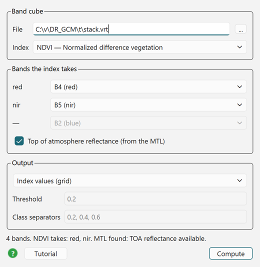
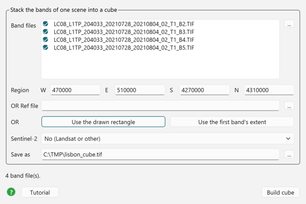
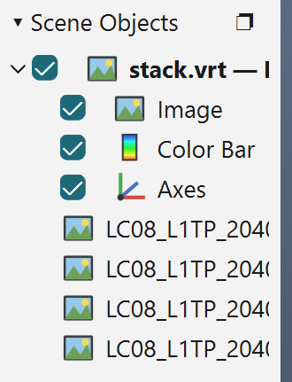

Remote sensing: Spectral indices and Band cube
Satellite → Remote sensing → Spectral indices… and Satellite → Remote sensing → Band cube (cut)… — the green ? at the bottom of either dialog opens this page; the Tutorial button beside it opens a worked example, Tutorial: Landsat bands to NDVI and a water mask.
Both tools work on a band stack: the bands of one satellite scene, one raster per band. A stack comes in one of two shapes:
- a .vrt that points at the scene's own band files (one GeoTIFF per band, as USGS ships a Landsat scene) — nothing is copied, the .vrt only lists them;
- a cube: one multi-band GeoTIFF holding the bands themselves, cut to a region. Band cube makes one from a scene's band files.
Band names
Wherever a tool lists the bands of a stack — the band pickers of every Remote sensing dialog, and the rows in Scene Objects — a band goes by its real name, never "Layer 3":
- its description, when the file carries one. A cube made by Band cube does:
Band4 - Red [0.64-0.67]; - otherwise the name of its file, cut to the part that tells the bands apart: a .vrt of
LC08_L1TP_204033_20210728_20210804_02_T1_B2.TIF…_B5.TIFlistsB2…B5; - and, for a scene whose sensor is recognised from its product name, the band's role after it:
B4 (red),B5 (nir). Recognised are Landsat 8/9 OLI (LC08_,LC09_), Landsat 4/5/7 TM/ETM+ (LT04,LT05,LE07— their bands are numbered differently), Sentinel-2 MSI (S2A_…,MSIL2A, tile names such asT29SNC_…_B04_10m) and HLS (HLS.L30,HLS.S30).
The role is what an index's band slots are filled by: NDVI's red slot takes B4 (red) on Landsat 8 and B3 (red) on Landsat 7, and never a band whose name merely contains the word (B5 (redEdge1)).
Spectral indices

File — the band stack (a .vrt, a cube, any multi-band raster). Opened from a window that shows one, it is already filled in.
Index — the index to compute. Picking one names its band slots below and fills them:
| Index | Bands | | Index | Bands | |:–––|:–––|-|:–––|:–––| | NDVI | red, nir | | CLG | green, redEdge3 | | EVI | blue, red, nir | | CLRE | redEdge1, redEdge3 | | EVI2 | red, nir | | MTCI | red, redEdge1, redEdge2 | | SAVI | red, nir | | MCARI | green, red, redEdge1 | | MSAVI | red, nir | | NDREI1 | redEdge1, redEdge2 | | SATVI | red, swir1, swir2 | | NDREI2 | redEdge1, redEdge3 | | SLAVI | red, nir, swir2 | | NDWI | green, nir (McFeeters, open water) | | GNDVI | green, nir | | NDWI2 | nir, swir2 (Gao, water in leaves) | | GLI | red, green, blue | | MNDWI | green, swir2 | | TGI | red, green, blue | | NBRI | nir, swir2 (burn ratio) | | VARI | red, green, blue | | NDMI | nir, swir1 (moisture) |
The red-edge indices need Sentinel-2: Landsat has no red-edge bands.
Bands the index takes — one picker per band the index needs, labelled with its role. Each is pre-selected by that role when the sensor is recognised (see Band names); change it when your stack is ordered differently. Changing the Output never re-picks them — only a new file or a new index does.
Top of atmosphere reflectance (from the MTL) — compute the index on reflectance instead of on the raw digital numbers: each band is calibrated with the scene's MTL (its gain, offset and the sun's elevation), the same calibration Landsat calibration… applies. It can be ticked only when the MTL is at hand, and is ticked by default when it is:
- a .vrt of Landsat band files, with the scene's
…_MTL.txtbeside them; - a cube made by Band cube from Landsat bands — it keeps the MTL in its own metadata.
A Level-2 surface-reflectance band (…_SR_B4.TIF) comes out as its surface reflectance. Indices are meant to be computed on reflectance: on raw numbers each band's own gain skews the ratio.
Output — what the index is turned into:
| Output | Result |
|---|---|
| Index values (grid) | the index itself, a grid (NDVI runs from −1 to 1) |
| Threshold: NaN below it (grid) | the same grid, every pixel below Threshold left empty |
| Mask (≥ threshold) | a black/white image: white where the index ≥ Threshold |
| Mask (< threshold) | the reverse: white where the index < Threshold |
| Classes (up to 3 separators) | an image of classes 0–3, cut at the Class separators |
Threshold — the index value that splits the pixels; used by the Threshold and the two Mask outputs (greyed out otherwise). E.g. 0.2 for NDVI vegetation, 0 for an NDWI water mask.
Class separators — up to three increasing values, comma-separated; used by Classes only. With 0.2, 0.4, 0.6: below 0.2 → class 0, from 0.2 → 1, from 0.4 → 2, from 0.6 → 3 (bare, sparse, moderate, dense vegetation for NDVI).
Compute — the result joins the window as a new layer of its own, with its own axes and colour bar, named after the index, the calibration and the output: NDVI TOA — stack, NDWI TOA mask ≥ 0 — stack. A pixel where any band the index takes has no data (the fill around a satellite swath, DN 0) has no index either: it stays empty, it is never "NDVI 0".
Band cube

Cuts the bands of one scene to a region and stacks them into one multi-band GeoTIFF, which then opens in the window. Landsat bands get their descriptions (Band4 - Red [0.64-0.67]) and the scene's MTL is kept in the cube's metadata, so Spectral indices and Landsat calibration can calibrate it later.
Band files — the band files, in the order they go into the cube. Only the checked ones are used. Opened from a window that shows a .vrt, the list holds that .vrt's band files, all checked.
- ... adds files (several at once; press it again to add more, from another folder too). A file already listed is not added twice.
- Drag a file up or down to change its place in the cube.
- Hover a file for its full path.
Region — W / E / S / N in the band files' own coordinates (UTM metres for Landsat and Sentinel-2). All four empty: the whole scene. Three ways to fill it besides typing:
- OR Ref file — pick a grid or image: its extent becomes the region, converted to the bands' coordinates when it is in another system. Limits you typed are left alone until you pick a new one.
- OR Use the drawn rectangle — the last rectangle drawn in the window (Draw → Rectangle), over the image it shows, converted to the bands' coordinates when the window is in another system.
- Use the first band's extent — the whole scene's extent, to trim by hand.
Sentinel-2 — Sentinel-2 file names do not say which band set they are; say whether these are the 10 m, 20 m or 60 m bands so their descriptions can be assigned. No for Landsat and anything else.
Save as — the GeoTIFF to write. It is opened in the window when it is done.
Build cube — cuts, stacks, writes and opens.
In Scene Objects
A band stack's group lists what it is made of, below its usual rows:
| A .vrt lists its band files | A cube lists its bands |
|---|---|
 |  |
These rows have no checkbox — they are not on screen, they are what the stack holds. Click one:
- a file row offers Load file: that band file opens in the window, as File → Open would open it;
- a band row offers Load band: that band joins the window as a layer of its own, named
<cube> — <band>.
Hover a row for the file's full path, or the band's number and full name.
From Julia
The dialogs run InteractiveGMT's RemoteS functions, which work on their own too:
using InteractiveGMT.RemoteS
# a cube of bands 2-5, cut to a block of the scene (UTM metres), MTL kept in its metadata
cutcube(names = ["…_B2.TIF", "…_B3.TIF", "…_B4.TIF", "…_B5.TIF"],
region = [470000, 510000, 4270000, 4310000], save = "lisbon_cube.tif")
# NDVI on TOA reflectance: the cube's band 4 (red) and band 5 (nir), calibrated with its MTL
R = dn2reflectance("lisbon_cube.tif", band = 4)
N = dn2reflectance("lisbon_cube.tif", band = 5)
G = ndvi(R, N)Every index has its function of the same name (evi, ndwi, mndwi, …), and threshold=, mask= and classes= give the other outputs.